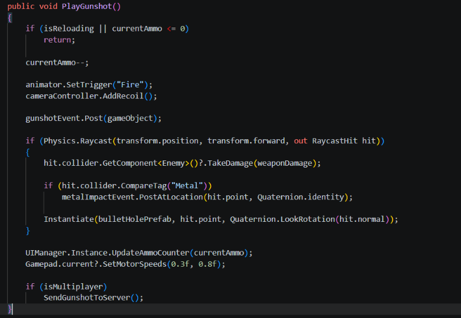
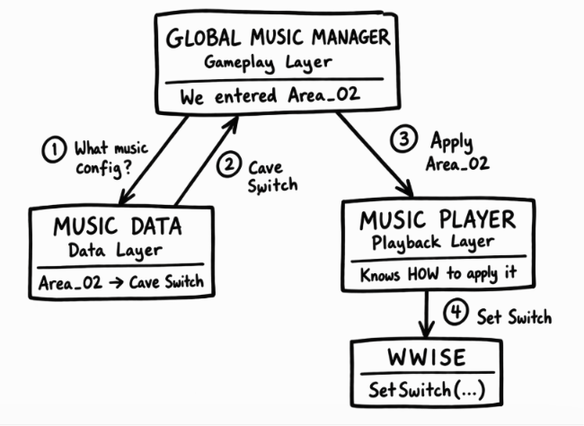

Whenever I hear the words “Software Architecture,” I usually think that it is something for highly senior software developers, something that only a select number of masterminds in the world are capable of doing.
But… over time, I’ve come to realize that architecture is relevant at every stage of learning, and we should be thinking about it from day one.
Software architecture is a core part of how we build software. It is many things, but if I had to oversimplify it, I would describe it as: how a piece of software is built from the ground up, how its systems interact with each other, which tools will be needed to build something scalable, and how we make it survive all the twists and turns of the development process.
And those same principles apply to video game development.
There are many principles around this topic. I don’t consider myself an expert on it, but I’m definitely passionate about keeping my stuff organized, and one of the concepts that has been very present in my day-to-day work is the Single Responsibility Principle (SRP).
Basically, when we talk about single responsibility, we are talking about every piece of our code having a clearly defined responsibility and addressing a single concern.
That doesn’t necessarily mean that every function or class should literally do one tiny thing. I like to think of it as keeping together the things that change for the same reason and separating the things that change for different reasons. It’s “Divide and Conquer” for game devs.
If I have a function that tries to do everything, it is very easy to break everything with the change of a single line; Think of a function that triggers a gunshot sound… You know that it doesn’t JUST trigger the sound. Most of the time, you have to make validations, check the location, set parameters, and do a plethora of things before even thinking about making the speakers go: “shhPOW!”
But there are ways to avoid this. Foor example, check out this function. It started with one innocent purpose: playing a gunshot.
Now it handles ammo, animation, recoil, audio, damage, surface impacts, VFX, UI, controller vibration, and networking.

However, if we separate this code into chunks and keep each concern separate:
- Code becomes more reusable.
- Way more maintainable.
- More readable.
- Big changes are easier to tolerate.
Let’s see how this applies to a real-life scenario.
The METROIDpolitan Orchestra.

I created a music system for a metroidvania game that I’m working on using Wwise and Unity. Because each area might have different transition rules and logic, I decided to keep the area data separate and let a global music system decide what should happen.
For this example, I like to think of the music system as three layers of logic, and I often compare them to an orchestra.
- Gameplay layer: How is the music interacting with the rest of the game? What is making the music change? What events in the game are triggering changes in volume or in that LPF/HPF? This is the conductor of the orchestra.
- Data layer: What information is my video game using to set the different parameters? This is the librarian of the orchestra; this is the person putting the right music sheet on the player’s stand.
- Playback layer: How is my game communicating with my middleware? This is the musician, the one playing, stopping, and making changes to the music… it is the game engine communicating with the instrument: Wwise, FMOD, etc.
I could try to have one gigantic script that tries to do it all… but just like you rarely see a soloist conducting and playing at the same time without spectacularly failing (unless your name is Daniel Barenboim), there are many things that can go south very quickly.
The Conductor of the Orchestra (The Gameplay Layer)
The big question an orchestra conductor must ask is:
“How should this music sound?”
And this often comes with a plethora of smaller questions like:
“How fast or slow should we play?”
“How do we balance the volume between the different sections of the orchestra?”
“Are the woodwind players’ eardrums really safe if we make the brass play that ‘fff’ note?”
Something similar happens with the music of a game. Because of the interactive nature of game audio, music can be constantly changing and evolving.
Some questions we could ask ourselves are:
Should we raise or lower the volume?
How do we know when to add another layer?
How do we know when we should switch to another track?
The GlobalMusicManager is our gameplay layer, and it is making all of these decisions.
When we hit pause, the music volume is lowered and a low-pass filter is applied. When we change to a new area, the script reads the new information and performs the corresponding actions to switch the music. When any global state that might affect the music changes…This class is in charge of that.
For example:
We have a helper function to change the music state based on different variables and conditions. This function is called many times in this class, and it tells the Music Player when to change states—like a conductor telling a musician when to play louder or softer.
private void RefreshMusicState()
{
var context = ResolveMusicContext();
if (hasAppliedContext && currentContext == context)
return;
var state = GetStateForContext(context);
if (state == null)
{
Debug.LogWarning(
$"[GlobalMusicManager] The MusicContext state for '{context}' is not assigned.",
this);
return;
}
musicPlayer.SetState(state);
currentContext = context;
hasAppliedContext = true;
}Or there’s another function that tells the game that we are in a boss fight, so the music should become more frantic. It grabs a Switch and tells the Music Player what should happen next.
public void BeginBossFight(AK.Wwise.Switch bossSwitch)
{
if (bossSwitch == null)
{
Debug.LogWarning(
"[GlobalMusicManager] BeginBossFight requires a MusicBoss switch.",
this);
return;
}
bossFightActive = true;
musicPlayer.SetSwitch(bossSwitch);
RefreshMusicState();
}Just like we only have one conductor acting as a single source of truth, in this implementation we only want one instance of the GlobalMusicManager, persistent throughout the whole runtime session.
Sounds familiar?
Yes… this starts to look like a Singleton-style pattern.
private void Awake()
{
if (Instance != null && Instance != this)
{
Destroy(gameObject);
return;
}
Instance = this;
DontDestroyOnLoad(gameObject);
}The Librarian of the Orchestra (The Data Layer)
An orchestra without music sheets is just a group of musicians playing whatever they want, all at the same time, without any rules or direction… and yes, I know that what I just described actually sounds very cool. But for a system like this, we need to know what we are supposed to be playing.
Data-driven approaches in audio have been a hot topic over the last few years. It makes sense, since they can have great benefits for scalability, organization, collaboration, and much more.
I’m still getting the hang of it, but I really find it fascinating!
Tomas Neumann has a great chapter called “Dynamic Game Data” in the first volume of Game Audio Programming: Principles and Practices. I really recommend it if you want to see what this is about.
Because our Music Manager needs to know what it should be playing, we have a class that contains the information it needs.
It is a small script that contains information such as:
- Which area are we in?
- Which Wwise Switch corresponds to this area?
using UnityEngine;
namespace Alumbra
{
[CreateAssetMenu(
fileName = "NewMusicConfiguration",
menuName = "Scriptable Objects/Audio/Music Configuration")]
public class MusicData : ScriptableObject
{
[Header("Interactive Music")]
[Tooltip("Area content selected in the global music event.")]
[SerializeField] private string areaId;
[SerializeField] private AK.Wwise.Switch areaSwitch;
public string AreaId => areaId;
public AK.Wwise.Switch AreaSwitch => areaSwitch;
}
}This is created as a ScriptableObject, so we create a Data Asset for each area that can be consulted by the Global Music Manager whenever we enter a new area or need to update the music configuration.
This script can grow as new functionalities are added and the game becomes bigger.
One of the cool things about working with these data-driven assets is that they can make collaboration with other developers easier.
As Dan Reynolds mentioned in his conference “Data-Driven Sound Design”, having a data-driven mindset can also be great when using source control, since it becomes easier for everyone to stay in their lane.
The Musician (The Playback Layer)
There is no orchestra if there are no musicians to play in it.
And one of the beautiful things about a game engine is that it allows us to have “musicians” that play anything we throw at them.
I don’t know if you’ve noticed yet, but so far I’ve only mentioned that we are using Wwise as our middleware. I haven’t actually shown any scripts that make direct calls to it.
This is because communication with Wwise is supposed to be concentrated in this layer.
And this brings us to another advantage of separating responsibilities.
Imagine that in the future we decide to make another metroidvania, but this time we decide to switch to FMOD.
The goal is for most middleware-specific changes to happen in this layer instead of having Wwise-specific logic scattered throughout the entire music system.
Refactoring becomes much simpler when everything isn’t mixed together.
The Music Player is a simple Wwise wrapper that contains methods like InitializeMusic(), StopMusic(), or SetRTPC().
These functions take the information sent by the Global Music Manager (what to do and how to do it) and this class is the one actually communicating with Wwise.
public void InitializeMusic()
{
if (isMusicInitialized)
return;
if (levelMusicEvent == null || !levelMusicEvent.IsValid())
{
Debug.LogWarning(
"[MusicPlayer] The global level music event is not assigned or is invalid.",
this);
return;
}
var playingId = levelMusicEvent.Post(gameObject);
if (playingId == AkSoundEngine.AK_INVALID_PLAYING_ID)
{
Debug.LogWarning(
$"[MusicPlayer] Wwise could not post '{levelMusicEvent.Name}'. Verify that its SoundBank is loaded and regenerated.",
this);
return;
}
isMusicInitialized = true;
}
/// <summary>
/// Stops the global music event when leaving its ownership scope.
/// </summary>
public void StopMusic()
{
if (!isMusicInitialized)
return;
if (levelMusicEvent == null || !levelMusicEvent.IsValid())
{
Debug.LogWarning(
"[MusicPlayer] The global level music event is not assigned or is invalid.",
this);
return;
}
levelMusicEvent.Stop(gameObject);
isMusicInitialized = false;
}
// All functions related to Wwise—or any middleware—go here!Wait a Minute… Is Wwise Really Only in the Playback Layer?
Well…
Almost.
If you’ve been paying attention, you might have noticed that GlobalMusicManager and MusicData still know about Wwise-specific types.
For example, both of them have references to AK.Wwise.Switch.
So yes: Wwise has escaped its cage.
The goal is to keep refining this system and separating those responsibilities even further.
Instead of something like:
AK.Wwise.Switch bossSwitch;our gameplay code could work with something that belongs to our own domain:
MusicBossId boss;Then, somewhere closer to the Music Player, we could have the corresponding Wwise Switches and States hooked up through a mapping that matches each ID with its middleware counterpart.
That way, the rest of the game only needs to know something like:
Boss = SpiderQueenwhile the Music Player (or another middleware-specific configuration layer) knows that SpiderQueen corresponds to a particular Wwise Switch. But for our current purpose, it is fine as it is for now.
Architecture is rarely something you magically get perfect on the first try. Sometimes the interesting part is noticing where those boundaries are leaking… and deciding whether fixing them is actually worth it for your project.
Just like an orchestra gets better as it rehearses, adjusts things, and tries new ideas, the same happens with our systems. Good architecture is not about having zero dependencies. It is about choosing where those dependencies are allowed to live.
This is one of the beauties of game development: there’s always an opportunity to get things tighter, and the process of getting there can be just as rewarding as seeing the result.
And since apparently I can’t stop using music analogies, it’s a little like going from:
“That guitar sounds like a cat being strangled.”
to:
“Man… I didn’t know you could play Crushing Day’s solo while standing!”
Conclusion
To summarize, the GlobalMusicManager reads the data provided by MusicData and tells the MusicPlayer what the music should do.
Dividing a big system into smaller pieces and thinking in terms of composition and modules has helped me understand bigger systems without getting overwhelmed by everything a game needs.
It doesn’t mean that every dependency has to disappear or that every system needs five layers of abstraction. Sometimes separating responsibilities just enough to understand who owns what can already make a huge difference.
Hope this helps you with your own creations and systems!